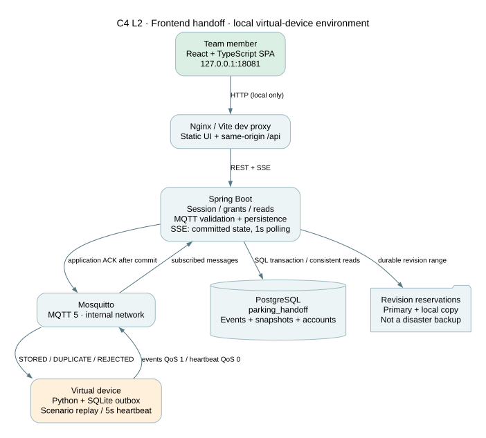
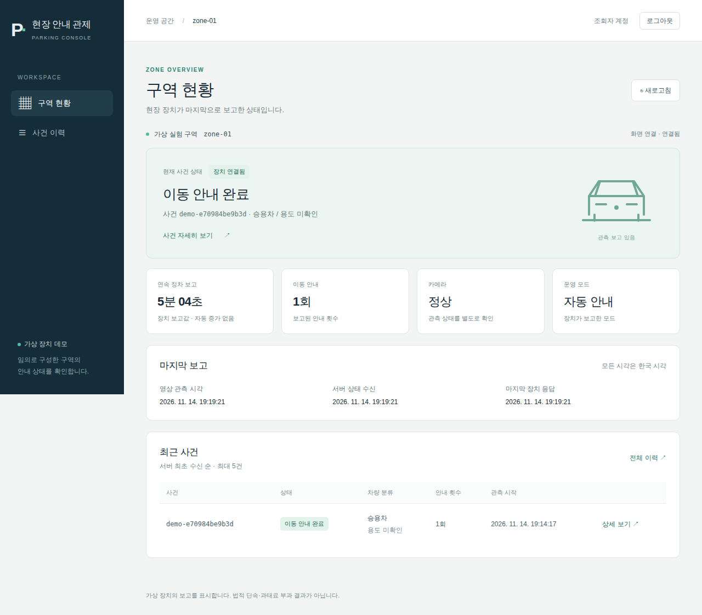

프론트 인계 설명서
2026-11-15 · 공통 기준 브랜치 main · 제품 기준 v1.43
무엇을 받게 되나요?
로그인 → 구역 현황 → 사건 목록·상세 → 로그아웃까지 연결된 React 앱입니다. 화면의 데이터는 가상 장치가 MQTT로 보낸 메시지를 Spring Boot가 PostgreSQL에 저장한 결과입니다. 정적인 예제 화면이나 별도 가짜 API가 아닙니다.

그림을 크게 열기 ↗| 포함 | 이번 인계에 포함하지 않음 |
|---|---|
| 세션 로그인·CSRF·구역 권한, 실제 조회 API, 전체 상태 SSE, 재접속 | 실물 보드 AI·LED/스피커·실차 검증 |
| 관측 전·통신 지연·오류·빈 이력·권한 제한 표시 | 법적 단속 결과, 영상 스트리밍, 지도·내 차 찾기 |
| 가상 사건 발행, 영속 순번·재전송·저장 ACK, 독립 실행 환경 | 미구현 수동 제어·정책 변경·사진 파일 버튼 |
전달 기준: 작업표와 검증 기록을 확인합니다. 로컬 실행판과 공개 HTTPS 완료는 별개입니다. 현재 공개 URL·배포 서버·DNS가 지정되지 않았습니다.
사람은 이 문서부터 읽습니다. 코딩 AI에는 인계 컨텍스트 JSON과 저장소를 함께 제공합니다. JSON은 읽을 순서와 작업 범위를 안내하며 원본 계약을 대체하지 않습니다. 실행 코드와 문서는 main을 기준으로 합니다. 기존 인계 구현의 변경 이력은 PR #3, 새 시안의 적용 범위는 시안 적용 기준에서 확인합니다.

그림을 크게 열기 ↗1. 처음 실행하기
팀 개발은 ZIP 다운로드 대신 클론으로 시작합니다. ZIP으로 받은 parking-system-feat-frontend-handoff는 Git 이력·원격 연결이 없는 사본입니다. 아래 명령으로 만든 illegal-parking-detection 폴더를 개발 도구에서 엽니다. 기존 ZIP 폴더에서 수정한 내용이 있다면 먼저 보존하고 변경 파일만 작업 브랜치로 옮깁니다.
필요한 것은 Git, Python 3.10 이상, 실행 중인 Docker Desktop/Engine과 Compose v2입니다. Linux/macOS 기준입니다. Windows는 WSL2를 사용합니다. 첫 실행은 이미지·의존성을 내려받습니다. 프론트 코드를 수정하려면 Node.js 24.13.0도 필요합니다(frontend/.nvmrc).
git clone https://github.com/yh4752/illegal-parking-detection.git
cd illegal-parking-detection
python3 tools/handoff.py prepare
prepare는 저장소에 포함된 실행 도구입니다. Docker 자체 명령은 아닙니다. 별도 parking-handoff 프로젝트에 빈 DB·브로커·서버·화면을 만들고 구역·정책·조회 계정을 준비합니다. 기존 parking-local의 8080/11883/15432와 DB를 변경하지 않습니다. 브라우저 세션 쿠키도 PARKING_HANDOFF_SESSION으로 분리합니다. 이미 초기화한 인계 DB는 보존하며, 기존 데이터가 있는 DB를 초기화하려는 요청은 거부합니다.
- 주소: http://127.0.0.1:18081
- 아이디:
handoff-viewer - 비밀번호: 실행한 PC의
.local-state/handoff/web-password파일을 직접 열어 확인합니다. 실행 시 무작위 생성하며 Git에 넣지 않습니다. - 최초 화면은 첫 관측을 기다립니다입니다. 아직 사건을 만들지 않았으므로 정상입니다.
공유할 때는 비밀번호 파일/.env를 저장소나 공개 메신저 자료에 첨부하지 않습니다. 상대 PC의 prepare는 그 PC용 계정을 생성합니다.
2. 화면과 실제 저장을 함께 확인하기
저장소 최상위의 별도 터미널에서:
python3 tools/handoff.py simulate
가상 ‘이동 안내 완료’ 사건과 5초 간격 heartbeat가 전송됩니다. 화면이 연결됨으로 바뀌고 사건 상세에서 수신 메시지를 볼 수 있습니다. 5분 4초는 가상으로 재생한 정차 보고값입니다. 5분을 실제 측정하거나 AI가 영상을 분석한 시험이 아닙니다.
python3 tools/handoff.py pause-simulator
마지막 유효 heartbeat로부터 15초 초과 시 응답 지연, 30초 초과 시 연결 미확인으로 바뀝니다. 서버가 약 1초마다 판정하므로 경계 직후 약 1초가 더 걸릴 수 있습니다. 차량 상태는 마지막 관측으로 남습니다. 통신 단절이 차량 출차를 뜻하지 않습니다.
python3 tools/handoff.py status
python3 tools/handoff.py logs
python3 tools/handoff.py stop
python3 tools/handoff.py start
stop은 이 인계 환경만 중지하고 데이터는 보존합니다. start 후 시뮬레이터는 별도 simulate로 시작합니다. 실행 도구는 볼륨 삭제/초기화 명령을 제공하지 않습니다.
3. 프론트 수정 시작점
서버·DB·브로커는 위 환경을 켜 둡니다. 프론트만 개발 서버로 실행합니다.
cd frontend
npm ci
npm run generate
PARKING_API_PROXY=http://127.0.0.1:18080 npm run dev
http://127.0.0.1:5173에서 수정 내용을 봅니다. /api 요청은 Vite가 Spring으로 전달합니다. 별도 CORS 허용이나 브라우저의 MQTT 연결은 필요하지 않습니다. 배포 빌드는 Nginx가 같은 출처의 API로 전달합니다.
| 수정하려는 것 | 파일/폴더 | 주의할 경계 |
|---|---|---|
| 색·간격·글자·반응형 | frontend/src/styles/ |
상태별 경고·키보드 focus 유지 |
| 메뉴·공통 배치 | src/components/Shell.tsx |
로그아웃 흐름 유지 |
| 구역 카드·카메라/사건 표시 | src/features/zones/ZonePage.tsx |
장치 연결과 화면 연결, 최초 null 구분 |
| 목록·기간/상태 필터·상세 | src/features/events/ |
기간은 KST 입력→UTC 변환, 서버 최초 수신 기준 |
| 로그인 화면 | src/features/auth/LoginPage.tsx |
label·autocomplete·401/429 오류 유지 |
| 통신·인증 | src/api/client.ts, features/auth/Auth.tsx |
변경 시 백엔드 담당자와 협의 |
| 실시간 수신·revision | features/zones/zoneStream.ts |
오래된 응답 무시·재연결·권한 회수 처리 유지 |
| API 타입·응답 검증 | src/api/generated/ |
직접 편집하지 않고 npm run generate |
React 19, TypeScript 5.9, Vite 8, React Router 7, CSS Modules입니다. 정확한 버전은 package/lockfile을 따릅니다. npm run format으로 코드 서식을 맞추고, npm run format:check로 검사합니다. 처음부터 기능을 다시 만드는 대신 실행되는 화면의 디자인·사용성을 개선하면 됩니다.
최신 main에서 본인 작업 브랜치를 만들어 진행합니다. 예를 들어 git switch -c feat/console-ui로 시작하고 PR의 기준을 main으로 지정합니다. 기존 브랜치에서 작업 중이면 전환 절차를 따릅니다. 첫 작업은 시안의 색·메뉴·구역 현황 배치를 기존 React 화면에 적용하는 것입니다. 동작 차이는 시안 적용 기준에 정리했습니다. 기존 가상 장치의 정상/통신 지연 표시를 유지하며 변경 전후 화면과 검사 결과를 PR에 첨부합니다.
4. 알고 바꿔야 하는 통신 규칙
| 흐름 | 화면의 책임 |
|---|---|
| 로그인/로그아웃 | 먼저 /api/csrf로 토큰 발급. 로그인 후 토큰 재발급. 쿠키는 브라우저 관리 |
| 현재 사용자 | /api/auth/me의 user_id·role 사용. 실제 구역 권한은 서버가 검사 |
| 상태 조회 | /api/zones/{id}/status의 8개 필드 유지. 관측 전 snapshot=null도 정상 |
| SSE | /api/stream?zone_id=..., zone_snapshot, id=view_revision, data=전체 ZoneView |
| 최초/재연결 | REST로 현재 상태를 다시 조회. 최초 revision=0 수용 후 큰 revision만 반영 |
| 사건 이력 | /api/events, /api/events/{id}를 10초 및 창 focus 때 재조회. 과거 메시지가 추가되어도 현재 구역 revision은 그대로일 수 있음 |
| SSE 오류 | REST로 인증·권한·서버 상태 확인 후 재시도. 401은 로그인, 403/404는 중단, 429는 Retry-After |
| 화면 이동/계정 변경 | 기존 요청 Abort, SSE close, 타이머 해제. 이전 계정·구역의 응답 무시 |
구역 목록 API는 이번 범위에 없습니다. 초기 구역 ID는 VITE_DEMO_ZONE_ID(기본 zone-01)이며 공개 설정입니다. 이 값 자체가 접근 권한을 부여하지 않습니다. 브라우저 저장소에 비밀번호·세션·CSRF 토큰을 저장하지 않습니다.
서버는 1초마다 커밋된 전체 상태를 읽어 새 revision만 전달합니다. SSE는 모든 중간 사건을 한 건씩 전송하는 감사 로그가 아닙니다. 세션당 3개/전체 50개 연결 상한, 느린 연결 종료와 권한 재검사를 적용합니다. 결정 근거를 참고합니다.
5. 수정 후 확인
# frontend/에서
npm run generate
npm test
npm run build
실제 브라우저 자동 시험은 빈 별도 인계 환경에서 실행합니다. 기존 개발 데이터가 있는 환경에 실행하면 ‘첫 관측 전’ 검사가 실패하도록 되어 있습니다. 데이터를 지워서 통과시키지 말고 새 클론/별도 Docker 환경을 사용합니다.
# frontend/에서, 위 prepare 완료 후
npx playwright install chromium
npm run test:e2e
시험은 실제 로그인, MQTT 발행·저장·조회, SSE, 목록/상세, 통신 단절/재연결, 15/30초 표시, 모바일 폭, 로그아웃/재로그인을 검사합니다. CI는 깨끗한 체크아웃과 독립 Docker 볼륨에서 실행합니다. 성공 여부·커밋은 검증 기록을 기준으로 판단합니다.
브로커·DB 중단/복귀와 중복·충돌·역순·서버 재시작은 저장소 최상위의 python3 tools/verify_handoff_transport.py가 별도 인계 환경에서 검사합니다. 실행 중 해당 데모 서비스가 중지/재시작되므로 개인 작업용 데이터가 아닌 자동 시험 환경에서만 사용합니다.
6. 잘 안 될 때
| 증상 | 먼저 확인할 것 |
|---|---|
| Docker daemon 연결 오류 | Docker Desktop/Engine 실행 후 같은 명령 재실행 |
| GitHub clone 거부 | 공개 저장소 URL·브랜치 이름·네트워크 확인. 직접 push는 별도 쓰기 권한 필요 |
| 18080/18081/5173 사용 중 | 다른 프로세스인지 확인. 사용 중인 프로세스를 무작정 종료하지 않음 |
| 첫 관측 전 화면 | simulate를 실행했는지, 서버/브로커 로그 확인 |
| 사건만 보이고 연결 미확인 | 유효한 새 heartbeat 수신 여부 확인. 사건 수신만으로 ONLINE이 되지 않음 |
| 503 구역 상태 확인 필요 | revision 파일·DB 불일치나 recovery hold. SQL로 hold를 강제 해제하지 말고 백엔드 담당자에게 전달 |
| prepare가 기존 DB라며 거부 | 신규 초기화 보호. 로그와 .local-state/handoff/initialized 존재 여부를 확인하고 기존 DB 보존 |
| 로그인을 반복해도 401 | 해당 PC에서 생성한 계정/비밀번호인지 확인. 429는 대기 후 재시도 |
7. 인계할 때 함께 전달할 것
- GitHub 브랜치/PR와 이 문서 링크.
- 공개 저장소는 누구나 열람·클론 가능. 직접 push할 팀원만 협업자 초대 필요.
- 로컬 실행판인지 공개 HTTPS 운영판인지.
- 검증된 커밋·검사 기록·남은 제한.
공개 HTTPS 주소는 아직 없습니다. 서버 위치·접근 권한·도메인/DNS와 외부 접속 검증이 필요합니다. 이 로컬 Compose는 외부 공개용 구성이 아니며, 내부 브로커/DB를 외부에 열어 대신하지 않습니다. 실제 서버의 비밀값·백업 저장소·TLS·복원 검증은 배포 단계에서 별도 확인합니다.
8. 받는 분의 완료 확인
- 지정 브랜치를 클론하고
prepare가 완료됩니다. - 해당 PC의 비밀번호로 로그인하고, 첫 관측 전 화면을 봅니다.
-
simulate후 구역 상태·사건 목록·상세가 같은 사건을 표시합니다. -
pause-simulator후 장치 응답 지연/연결 미확인으로 바뀌며 마지막 차량 상태가 남습니다. - Vite 개발 서버에서 CSS 한 곳을 바꿔 실제 반영을 확인합니다.
- 단위 시험·빌드를 실행하고 작업 브랜치를 푸시할 수 있습니다.
문제가 있으면 커밋 해시, OS·Docker·Node 버전, 실행 위치와 명령, 기대 결과와 실제 오류를 전달합니다. 비밀번호·쿠키·CSRF·환경 파일은 첨부하지 않습니다. 위 항목은 자동 CI 통과와 별개로, 실제 받는 분이 확인할 인수 항목입니다.